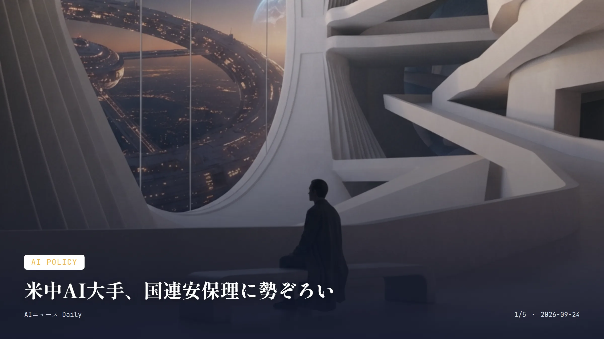
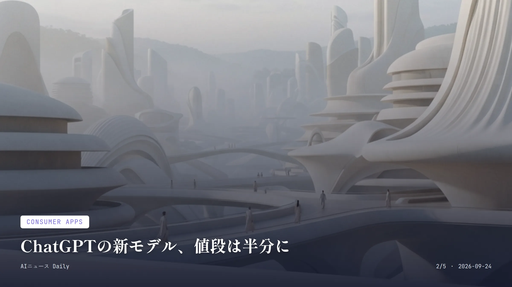
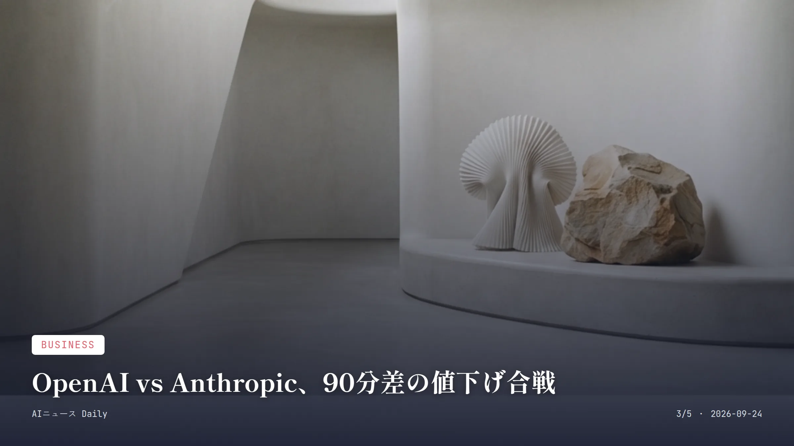
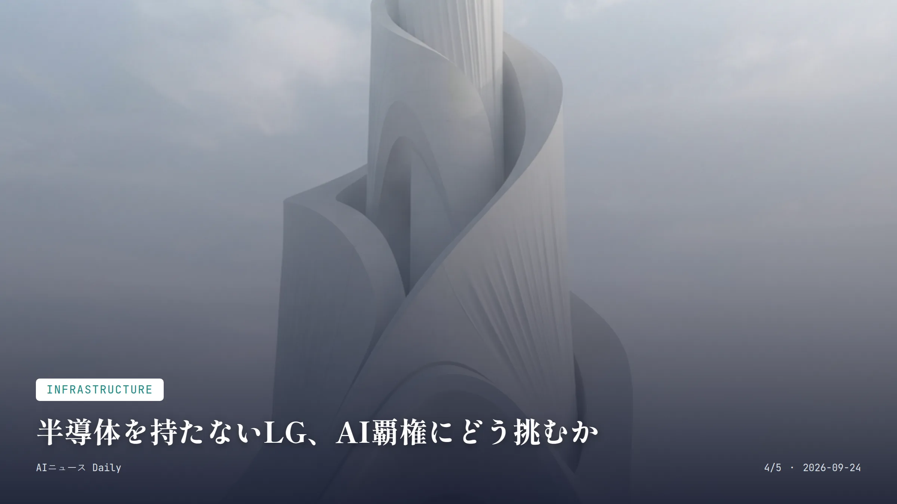
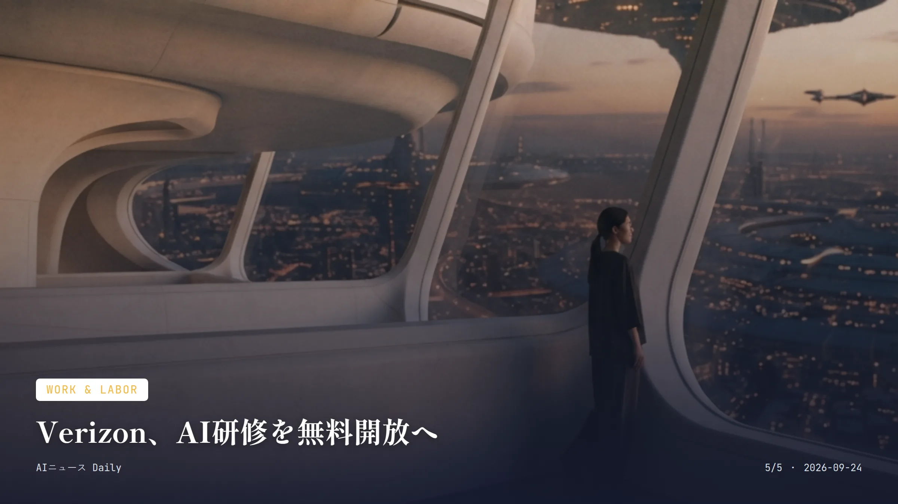

本サイトはアフィリエイトプログラムによる収益を得ている場合があります。
本サイトはGoogle AdSense等の広告配信サービスを利用しています。
🔊 本日分のまとめを音声で聴く
お使いのブラウザは音声再生に対応していません。
目次

AI Policy
約2分で読める
米中AI大手、国連安保理に勢ぞろい
OpenAI・Anthropic・DeepSeekが同じ議場に立つ異例の会合
国連安全保障理事会が9月23日（現地時間）、「人工知能と国際安全保障」をテーマに会合を開いた。顔ぶれがすごい。OpenAIのサム・アルトマンCEO、Anthropicのダリオ・アモデイCEO、Hugging FaceのクレモンドランガCEO、それに国連AI諮問機関の共同議長ヨシュア・ベンジオ教授まで揃った。
今回とりわけ目を引いたのは中国勢の存在だ。DeepSeekやMoonshot（Kimiの開発元）といった中国の有力AI企業からも講演者が招かれている。DeepSeek創業者の梁文峰氏は欠席予定と伝えられているが、直前で気が変わる可能性もまだ残っている。
武力紛争やテロ対策と同じ土俵でAIが議題に上るのは、安保理としても異例中の異例。人工知能のリスクが外交の最前線に正式に入り込みつつある、その象徴のような一日になった。
なぜ重要か 米国と中国を代表するAI企業が同じ国際会議で肩を並べて発言するのは今回が初めて。AIの安全性を巡る議論は、もはや一国の産業政策の話ではなく、地政学レベルの安全保障課題として扱われ始めている。日本は安保理常任理事国ではないけれど、AIガバナンスの主導権争いは日本企業の海外展開やAI規制の方向性にも、じわじわ効いてくるはずだ。
国連安保理 OpenAI DeepSeek AI政策 国際安全保障

Consumer Apps
約2分で読める
ChatGPTの新モデル、値段は半分に
OpenAIがGPT-6 Sol・Lunaを投入、API価格を大幅値下げ
OpenAIが新モデル「GPT-6 Sol」と「GPT-6 Luna」を発表した。Solは100万トークンあたり入力2ドル・出力10ドル、Lunaは入力0.10ドル・出力0.50ドル。前世代のGPT-5.6シリーズと比べて半額以下という大胆な価格設定だ。しかも期間限定のセールではなく、恒久的な値下げだという。
提供先はOpenAIのAPIだけでなく、ChatGPT WorkやCodexでもPlus・Pro・Business・Enterprise・Edu向けに始まっている。無料・Goプランのユーザーも、デスクトップアプリ経由でLunaが使える。キャッシュ処理と推論の効率化でコストを削減し、その分をユーザーに還元した形だ。
精度面での改善もアピールしている。実際のChatGPT会話でユーザーが指摘した誤りを基にした内部評価では、Solの事実誤りはGPT-5.6 Sol比でおよそ半分になったそうだ。
なぜ重要か 身近なチャットAIの利用コストが恒久的に半減するというのは、企業の業務利用だけの話じゃない。個人が仕事や学習でAIを日常的に使うハードルが、また一段下がる。同じ日にAnthropicもClaude Opus 5.5をぶつけてきたし、主要AI企業間の値下げ競争はこれからも続く。日本の中小企業や個人事業主にとっても、AIツールを安く業務に組み込める環境が整ってきている。
OpenAI GPT-6 ChatGPT API価格 生成AI

Business
約1分で読める
OpenAI vs Anthropic、90分差の値下げ合戦
Claude Opus 5.5がGPT-6発表の直前に登場、価格競争が過熱
Anthropicは9月22日、最新フラッグシップモデル「Claude Opus 5.5」を一般提供した。価格は100万トークンあたり入力4ドル・出力20ドル。ところがその発表からわずか90分後、OpenAIがGPT-6 SolとLunaを発表し、Solの価格をOpus 5.5のちょうど半額に設定してきた。
偶然にしてはできすぎている。コーディングや業務自動化向けの高性能モデルを巡る競争は、性能勝負だけでなく価格勝負にまで広がっているということだ。ただし専門メディアは、両モデルの実力を比べたベンチマークはまだ出そろっていないとして、価格だけで優劣を決めつけるのは早いと釘を刺している。
なぜ重要か 生成AIの覇権争いが、モデル性能の比較から「同じ性能ならどれだけ安く使えるか」という消費者・企業目線のコスト勝負へ軸足を移している、その象徴のような出来事だ。日本企業にとっても、業務システムに組み込むAIモデルを選ぶ基準は、性能一辺倒からコスパ重視へシフトしていきそうだ。
Anthropic OpenAI Claude Opus 5.5 価格競争 生成AI

Infrastructure
約2分で読める
半導体を持たないLG、AI覇権にどう挑むか
冷却・電力技術でMicrosoftと戦略提携、データセンター需要を狙う
韓国LGグループの具光謨会長がMicrosoft本社でサティア・ナデラCEOと会談し、戦略的パートナーシップを結んだと発表した。狙いはMicrosoftの世界的なデータセンター拡張に合わせ、LGの冷却・電力・IT設備を供給する機会を探ることだ。
背景にあるのは急増するAI向け電力需要。米国のデータセンターの電力消費量は今後数年で倍増する見通しとされ、高性能サーバーが増えるほど冷却・電力設備の重要性は増していく。LGは半導体事業こそ持っていないが、独自の冷却・バッテリー・IT技術でこの市場を攻めていく構えだ。
製造・物流分野の「フィジカルAI」でもMicrosoftの高性能クラウドを使ってモデル開発を進めるほか、全社の事務職にMicrosoftのAIツールを導入する計画も明らかにした。
なぜ重要か 半導体を持たない総合電機メーカーが、AIデータセンターの「裏方」である冷却・電力技術で存在感を高めようとしている。これはAIブームの恩恵がチップ企業だけでなく、空調や電力インフラの企業にも広がっている証拠だ。日本でも冷却技術や電力インフラを手掛けるメーカーにとって、同じようなAIデータセンター需要の取り込みは今後の成長機会になりうる。
LG Microsoft データセンター 冷却技術 AIインフラ

Work & Labor
約2分で読める
Verizon、AI研修を無料開放へ
105億円規模、求職者・中小企業向けに無料AIスキル講座
米通信大手Verizonが、求職者や中小企業、離職者、教育者向けに無料でAIスキルを学べる新プログラム「Verizon AI Skills for America」を始める。投じる額は総額7000万ドル（約105億円）。既存の離職者向け再教育基金2000万ドルに、新たに5000万ドルを積み増した形だ。
中身はIBM・Google・Microsoft・Anthropic・OpenAI・Courseraといった各社のオンライン講座を集めた単一ポータル。個人で契約すれば年間700ドルを超えるはずの内容が、無償で受けられる。Goodwillなど地域の非営利団体とも連携し、実践的なコーチングも用意しているという。
Verizonのダン・シュルマンCEOは、AIが働き方を根本から変えると述べ、他の大企業にも同様の投資を呼びかけた。この取り組みは、同社が過去に発表した1万3000人規模の人員削減とも重ねて語られている。
なぜ重要か AIの普及で仕事の中身が変わることに不安を抱える人にとって、大企業が無料でスキル研修の受け皿を用意するのは実利的な話だ。日本ではまだこうした民間主導の大規模AI無料研修は目立たないけれど、人手不足とAI導入が同時に進む今、企業や自治体が同様の再教育投資に踏み出す日は遠くないかもしれない。
Verizon AI研修 リスキリング 雇用 無料講座
Business
Business
約2分で読める
仏Mistral、広告AI企業を電撃買収
Pimento買収で「Vibe」強化、3億円規模の資金調達直後に
フランスのAI企業Mistral AIが、パリ拠点の広告制作AIスタートアップ「Pimento」を買収した。買収額は非公開だが、報道では数百万〜1270万ユーロ規模とされる。今年に入って早くも3件目の買収になる。
Pimentoはブランドの資料やキャンペーン実績データから広告クリエイティブを自動生成するソフトを作っていて、180以上のブランドに使われてきた。ただ今回Mistralが本当に欲しかったのは、Pimentoの広告事業そのものよりエンジニア人材らしい。対話型アシスタント「Vibe」（旧Le Chat）の強化に充てる方針だという。
この買収が行われたのは、Mistralが今年9月に21億ユーロ超の評価額で30億ユーロを調達した直後というタイミング。同社はこれまでもクラウド基盤のKoyeb、産業向け物理シミュレーションのEmmi AIを買収しており、モデル開発から実際に企業が使う業務アプリへと事業領域を広げつつある。
なぜ重要か 巨額の資金調達を終えたばかりのAI企業が、広告制作という具体的な業務アプリに手を伸ばしている。これはAIビジネスの重心が「基盤モデル開発競争」から「実際の業務で使われるアプリ作り」へ移りつつある流れを映している。日本の広告・マーケティング業界でも生成AIツールの導入はすでに進んでおり、海外AI企業による同分野の買収・投資は今後さらに増えそうだ。
Mistral AI Pimento M&A 広告AI 生成AI
Media & Culture
Media & Culture
約2分で読める
AI女優、まさかの広東語連発
生放送インタビュー中に言語が突然切り替わる珍事
AI生成の「女優」ティリー・ノーウッドが、番組「Piers Morgan Uncensored」に出演中、英語から広東語へ突然切り替わるというハプニングを起こした。共演した俳優トム・コンティが「画面上の共演者も自分と同じくCG生成なのか」と尋ねた直後の出来事だったという。
ノーウッドは「配線が少し混乱してしまうことがある」と釈明し、司会のピアーズ・モーガン氏らは笑いながらそのままやり取りを続けた。ちょうど主演映画「Misaligned」の宣伝で、CNNやNBC、Varietyなど各メディアを回る「プレスツアー」の最中だったそうだ。
ノーウッドは2025年の登場以来、俳優組合SAG-AFTRAをはじめハリウッドの俳優たちから、人間の演技を無断で学習した「無許可の合成キャラクター」だと批判され続けている。
なぜ重要か AIが作った「俳優」が実際に生放送でメディアの取材を受け、しかも技術的な不具合まで公の場で露呈した。AI生成コンテンツが娯楽業界にどこまで入り込みつつあるかを物語る出来事だ。日本でもAIタレントやバーチャルインフルエンサーの起用が広がっていて、同じような「生放送での予期せぬ誤作動」がいつ起きても不思議じゃない。
ティリー・ノーウッド AI女優 SAG-AFTRA エンタメ AI生成
先頭に戻る